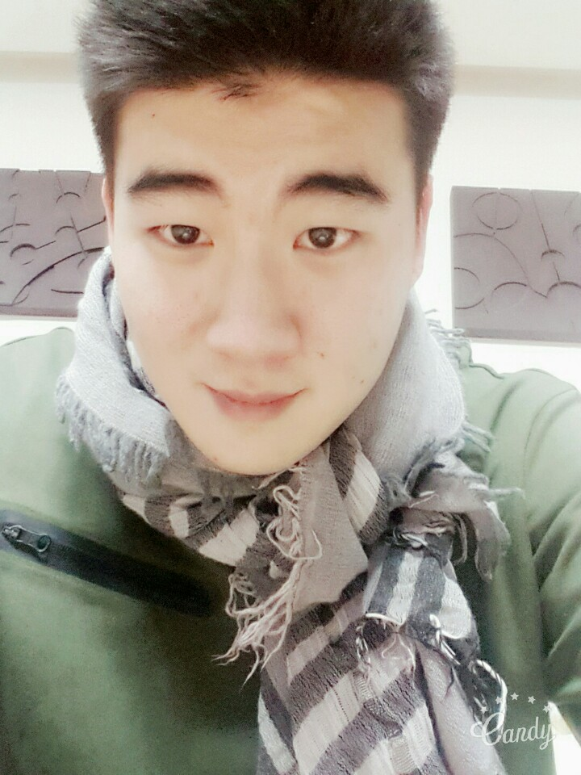
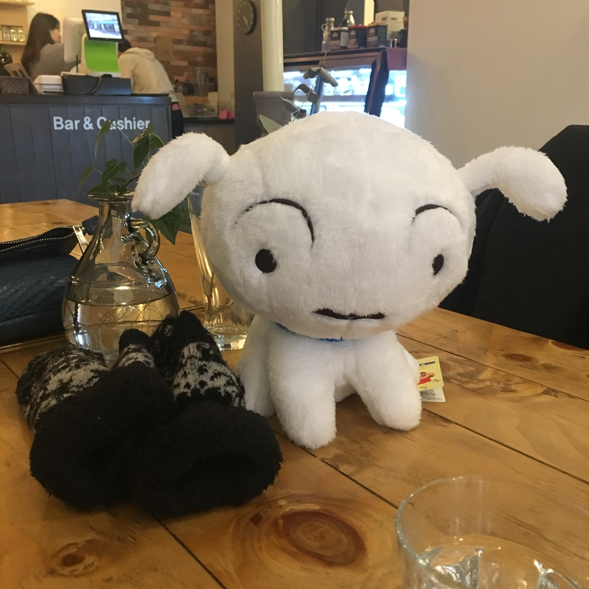
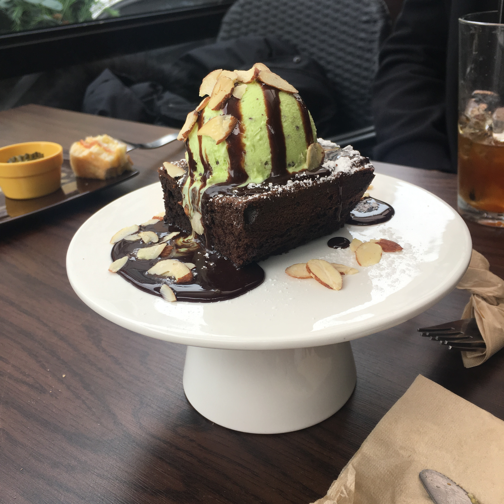
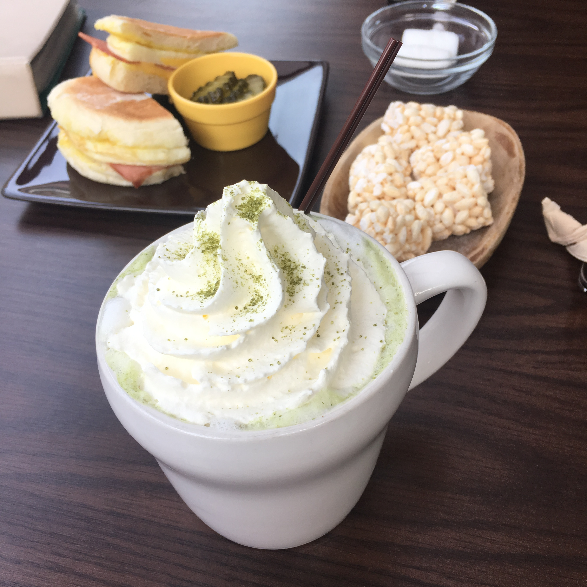
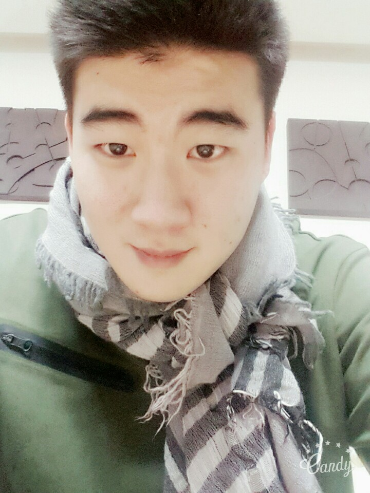
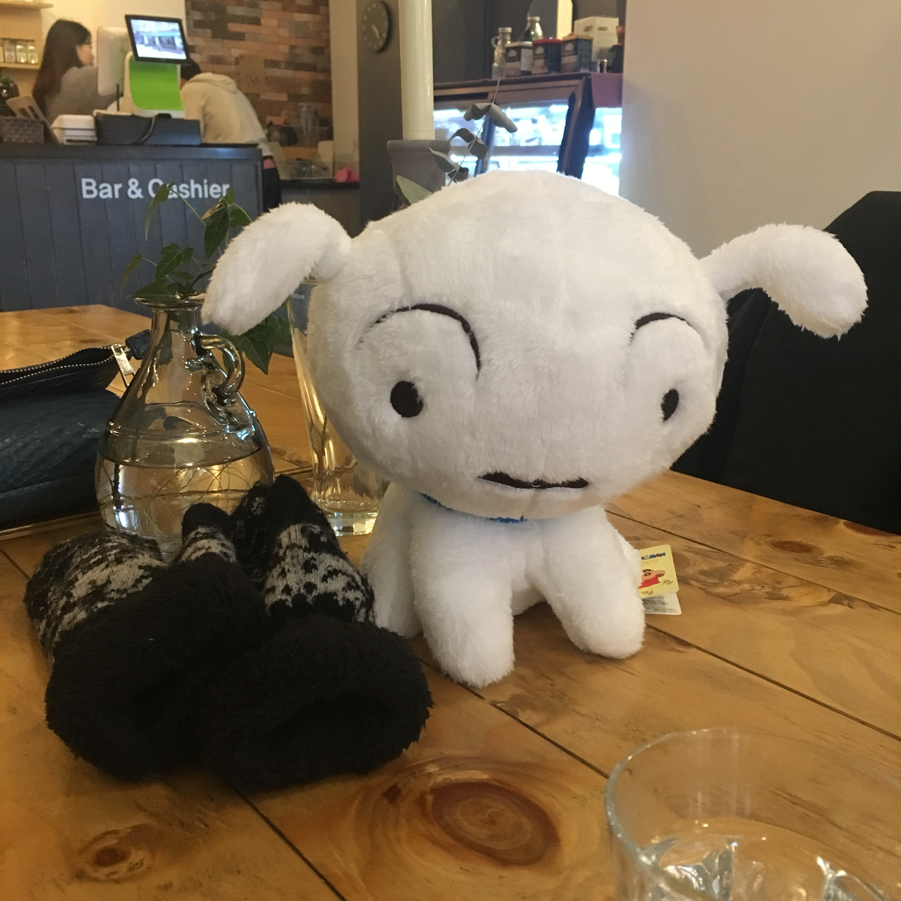
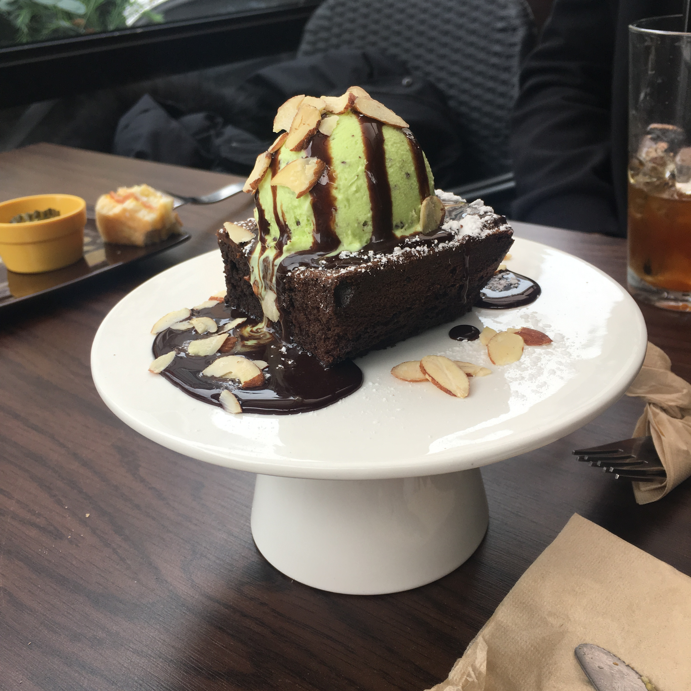
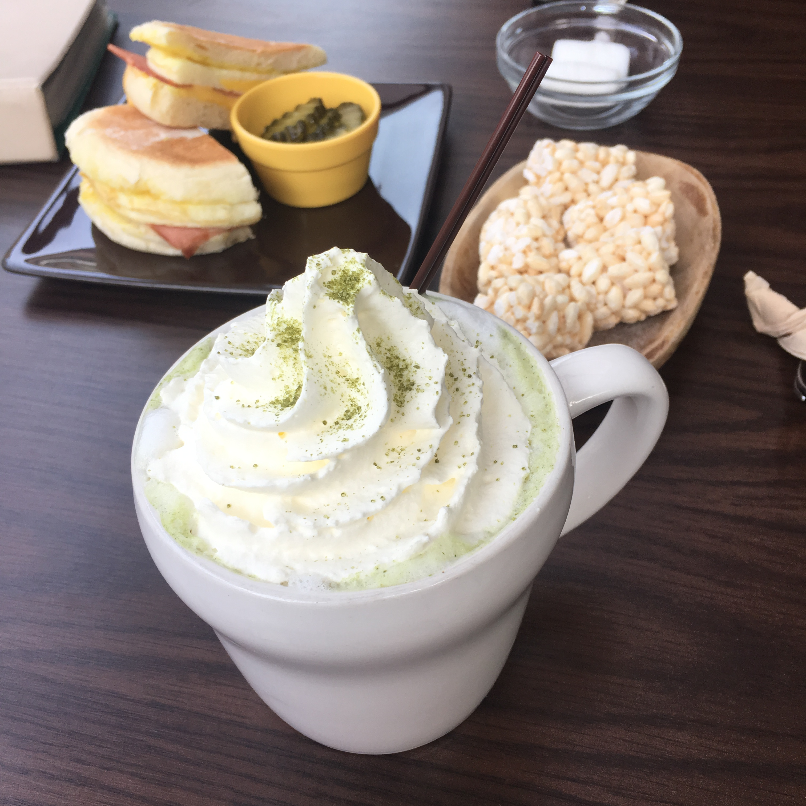

2016년 12월 24일 크리스마스 이브에 그들은 처음 만났다.
지인을 통한 소개팅으로 알게 되었으며, 당시 민준은 군인이었고, 다솜은 직장인이었다.
전역을 5개월 가량 앞둔 병장이었던 민준은 처음 다솜의 사진을 보고 운명의 상대임을 직감했다고 한다.
다솜은 평소 지각하는 것을 싫어하는 성격으로, 약속시간보다 일찍 나와 민준을 기다렸다.
시계탑 아래에서 자신을 기다리는 다솜을 본 민준은 다솜에게 첫눈에 반했다.
하지만 다솜은 소개팅에 늦은 민준이 그리 맘에 들지는 않았다고 한다.
둘은 어색하게 인사를 나눴고, 민준이 미리 예약해 둔
"돈파스타"로 향한다.
레스토랑 사장님은 특유의 경상도 사투리로 이~민준~ 예약자명을 확인했고
둘은 앉아서 이야기를 나눴다.
그때 발동한 민준의 자상한 남자 skill.
창문 틈새로 들어오는 찬바람에 추워하는 다솜을 위해
자신의 외투로 창문 틈을 막아준다.
    
   